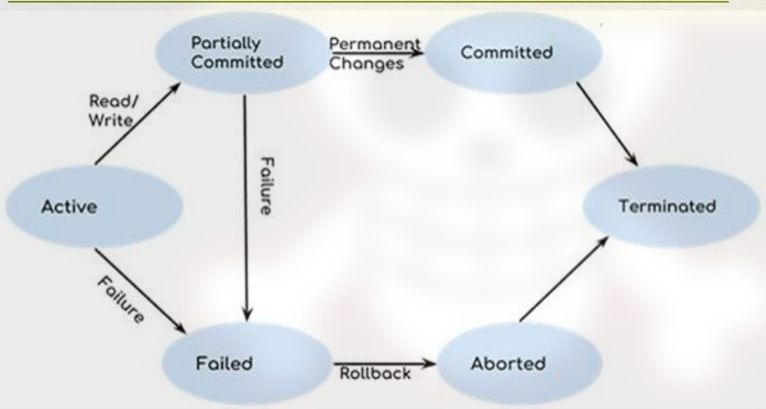

Transaction
- a sequence of operations
- consists of a series of reads and writes to the database objects
- transferring money from account A to account B
1- Read A
2- A = A - 1000
3- Write A
4- Read B
5- B = B + 1000
6- Write B- the problem with this is if the transaction stops after the third operation it would deduct the money from account A but fails to add to account B
- to solve this we would use 2 methods
- commit: save changes to the DB permanently
- used if all operations are completed successfully
- Rollback: either all transactions are performed or none of them are
- transactions can end in two states
Transaction Operations (ACIDS)
- Atomicity: either all of the db data modifications are performed or none of them are performed. transactions can end in two states
- Abort: if a transaction aborts then all the changes made are not visible
- commit: if a transaction commits then all the changes made are visible
- Consistency and Preservation: states that the execution of a transaction will leave the db in either its prior stable state or a new stable state
- Isolation: state that the data which in use at the time of execution of a transaction can’t be used by the second transaction until the first one us completed
- Durability or permanency: once a transaction changes the database and the changes are committed, these changes must never be lost because of a subsequent
Drawing 2025-06-03 14.25.26.excalidraw
State transaction

- Active state: indicated the transaction is in execution, and all the records are not saves to the database
- Partially committed: a state where we have all the read and write operations performed on the main memory (local memory) instead of the actual database
- Committed: the changes that are made in the local memory are saved in the database when all of the transaction are successful
- Failed state: if the transaction fails during execution it goes to failed state. The changes that are made in the local memory (buffer) are rolled back to the previous consistent state and the transaction goes to aborted state from the failed state
- Aborted state: in this state, the database recovery module will select one of the two operations: Re-start the transaction, Kill the transaction.
Concurrent Execution of Transactions
Data concurrency: means that users can access the data at the same time
problems with concurrency operations
- In order to run transactions concurrently we interleave their operations
- Each transaction gets a share of the computing time
- This leads to several sorts of problems • Lost updates • Uncommitted updates • Incorrect analysis • All arise because isolation is broken
Schedules
Schedules refer to the sequences in which operations (like read and write) of multiple transactions are executed. Schedules can be:
- Serial: Transactions are executed one after another.
- Concurrent (or non-serial): Operations of transactions are interleaved to improve performance.
Types of schedules
- Serial Schedule: A schedule where one transaction is completed fully before another begins.
- No interleaving of operations.
- Always consistent, but not efficient (no concurrency).
- Non-Serial Schedule: A schedule where operations from multiple transactions are interleaved.
- Increases concurrency, but may lead to conflicts or inconsistency if not handled properly.
- Serializable Schedule: A non-serial schedule (With interleaving of operations ) that produces the same result as some serial schedule.
- Ensures consistency while allowing concurrency.
- Two main types:
- Conflict Serializable: Operations can be reordered without changing the final outcome. Uses precedence graphs to detect conflicts.Two operations are said to be in conflict, if they satisfy all the following three conditions:
- Both the operations should belong to different transactions.
- Both the operations are working on same data item.
- At least one of the operations is a write operation.
- View Serializable: Ensures that transactions read the same values and write the same final values as in a serial schedule